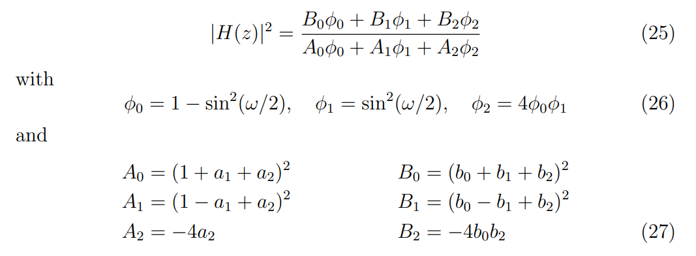

这种计算方式需要双线性变换的滤波器才能使用，如果是Match biquad则需要使用正规biquad计算方式
你可以提前预留tan(wc/2)，因为RBJ设计过程会使用到这个变量
另外的tan(exp(log_w)/2)可以通过打表的形式记录，或者将它使用数学软件进行多项式拟合
void Biquad_MakeLpf6(Biquad_t* b, float w) {
float k = tanf(w / 2);
b->b0 = k / (1 + k);
b->b1 = b->b0;
b->b2 = 0;
b->a1 = (k - 1) / (k + 1);
b->a2 = 0;
}
\[H(z)=\frac{b0z+b1}{z+a0}\]
通常我会使用\[z=e^{iw}\]带入进行计算\[wanalog=tan(wdigital/2)\]
一个模拟单极点低通滤波器是\[H(s)=\frac{wc}{s+wc}\]
\[s=iw\]
\[H(s)=\frac{1}{s^2+\frac{s}{Q}+1}\]
we can use\[s=\frac{s}{wc}\]
\[H(s)=\frac{s^2}{s^2+\frac{s}{Q}+1}\]
\[H(s)=\frac{s}{s+1}\]
\[H(s)=\frac{s}{s^2+\frac{s}{Q}+1}\]
\[H(s)=\frac{s}{s^2+\frac{s}{Q}+1}\]
\[H(s)=A\frac{s^2+\frac{\sqrt{A}}{Q}s+A}{As^2+\frac{\sqrt{A}}{Q}s+1}\]
还有一种方式是可以计算功率版本的，只需要计算H(s)与H(-s)的乘积即可
例如一个bilinear lowpass
\[H(s)=\frac{1}{s^2+\frac{s}{Q}+1}\]
\[H(s)*H(-s)=\frac{Q^2}{x^2+Q^2(x^2-1)^2}\]
其中s=ix
\[s=\frac{s}{wc}\]
我们可以使用match biquad中的计算公式也可以节省三角函数计算
